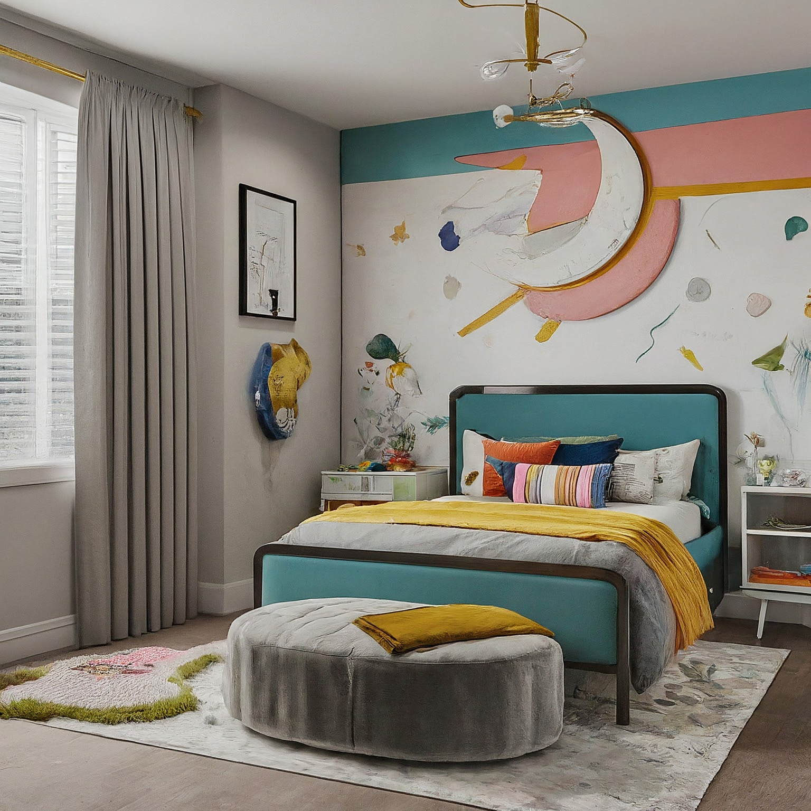

Kid's Bedroom Design Concept: Contemporary Playful Haven

Kid's Bedroom Design Concept: Contemporary Playful Haven
1. Overall Concept and Style:
This kid's bedroom will embrace a contemporary style with a playful twist. It will be a functional and inspiring space that encourages creativity, learning, and relaxation. The design will prioritize clean lines, minimalist forms, and a vibrant color palette to create a fun and engaging environment. The aim is to balance sophistication with child-friendly features, resulting in a room that feels both stylish and comfortable. The space will be adaptable to the child's changing needs as they grow.
2. Color Scheme and Materials:
- Primary Colors: A balanced mix of vibrant primary colors will form the core of the scheme. Think a strong, but not overwhelming, blue (like Cerulean or Teal) as the dominant wall color, complemented by accents of sunny yellow and a bright, energetic red.
- Secondary Colors: Introduce softer secondary colors like light green (Mint or Sage) and a muted orange (Peach or Apricot) as supporting accents to provide depth and prevent the space from becoming too visually jarring.
- Neutrals: Use white or light grey (almost white) as the base for furniture and textiles to allow the primary and secondary colors to truly pop.
- Materials:
- Flooring: Durable and easy-to-clean vinyl flooring or laminate in a light wood tone is ideal. Consider incorporating a colorful rug for added warmth and texture.
- Walls: Smooth painted walls with a durable, washable finish. One wall could feature a playful wallpaper with a geometric pattern or a child-friendly illustration in the chosen color scheme.
- Furniture: Utilize materials like painted wood (MDF or birch plywood) for furniture, emphasizing clean lines and simple shapes. Consider incorporating metal accents for a modern touch.
- Textiles: Opt for natural fabrics like cotton and linen for bedding, curtains, and cushions, choosing materials that are soft, breathable, and easy to maintain.
- Storage: Include fabric bins, woven baskets, and plastic storage containers to organize toys and belongings, keeping the space clutter-free.
3. Furniture and Layout:
- Bed: A platform bed frame in white or light grey with a playful headboard (potentially featuring a cutout shape or a simple geometric design). Consider a trundle bed for sleepovers.
- Desk: A simple, modern desk with clean lines and integrated storage is essential for homework and creative projects. Place the desk near a window to maximize natural light.
- Chair: An ergonomic and colorful desk chair that provides proper support and encourages good posture.
- Storage:
- Bookshelf: A low bookshelf or a modular shelving unit that can be easily reconfigured as the child grows.
- Toy Storage: Utilize open storage bins, drawers, and baskets to keep toys organized and accessible.
- Wardrobe: A wardrobe with ample hanging space and drawers to store clothes and accessories. Consider a wardrobe with colorful doors or drawer fronts.
- Play Area: Designate a specific area for play, potentially incorporating a soft rug, cushions, and a small table for drawing or building.
- Layout: The layout should be functional and encourage movement. Separate zones for sleeping, studying, and playing. Prioritize ample floor space for activities. Consider incorporating a small reading nook with a comfortable chair and a floor lamp.
Example Layout (Assuming rectangular room):
- Bed: Positioned against one wall, leaving space for a bedside table.
- Desk: Placed near a window on the opposite wall from the bed.
- Bookshelf: Located near the desk to create a dedicated study area.
- Toy Storage: Grouped together in one corner of the room to create a play area.
- Wardrobe: Positioned near the entrance of the room.
4. Lighting Design:
- Ambient Lighting: A ceiling fixture with a modern design and adjustable brightness to provide overall illumination. Consider a fixture with a fun shape or color to complement the playful theme.
- Task Lighting: A desk lamp with a flexible arm to provide focused light for studying and creative activities. Choose a lamp with a bright, energy-efficient bulb.
- Accent Lighting: Incorporate string lights or LED strip lights to add a whimsical touch and create a cozy atmosphere. Consider using color-changing LED lights to allow the child to customize the lighting to their preference. A nightlight can also function as accent lighting.
- Natural Light: Maximize natural light by using sheer curtains or blinds that allow light to filter into the room while providing privacy.
5. Decorative Elements:
- Wall Art: Incorporate colorful prints, posters, or paintings that reflect the child's interests. Consider artwork featuring animals, geometric shapes, or abstract designs. Create a gallery wall with a mix of framed prints and unframed artwork.
- Textiles: Use cushions, blankets, and throws in vibrant colors and playful patterns to add warmth and personality. Choose textiles with different textures to create visual interest.
- Rugs: A colorful rug with a geometric pattern or a playful design can define the play area and add warmth to the floor.
- Plants: Incorporate small, low-maintenance plants to add a touch of nature and purify the air.
- Personalized Touches: Display the child's artwork, photographs, and collections to create a space that feels uniquely their own. Consider a bulletin board or a magnetic wall for displaying artwork and important notes.
- Mobile: Hang a mobile above the bed with colorful shapes or figures to add a touch of whimsy.
6. Practical Considerations:
- Safety: Ensure all furniture is sturdy and stable, and that any sharp edges are rounded or covered. Use outlet covers to prevent electrical hazards. Anchor tall furniture to the wall to prevent tipping.
- Durability: Choose materials that are durable and easy to clean, as children's bedrooms are often subject to spills and messes.
- Storage: Maximize storage space to keep the room organized and clutter-free. Utilize vertical storage solutions, such as wall-mounted shelves, to free up floor space.
- Flexibility: Design the room to be adaptable to the child's changing needs as they grow. Choose furniture that can be easily reconfigured or repurposed.
- Child's Input: Involve the child in the design process to ensure that the room reflects their personality and interests. Allow them to choose their favorite colors, artwork, and decorative elements.
- Budget: Set a realistic budget for the project and prioritize essential items, such as furniture and flooring. Consider repurposing existing furniture or shopping for discounted items to save money.
- Accessibility: Ensure the room is accessible and easy to navigate for the child. Consider their height and reach when placing furniture and storage.
- Cleanability: Prioritize materials that are easy to clean and maintain. Consider using stain-resistant fabrics and washable paint.
This design provides a solid foundation for a contemporary and playful kid's bedroom. Remember to tailor the specific details to the individual child's preferences and needs. Good luck!